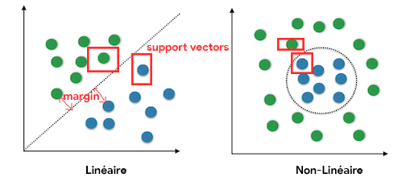
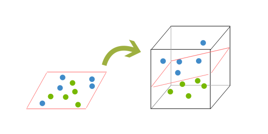
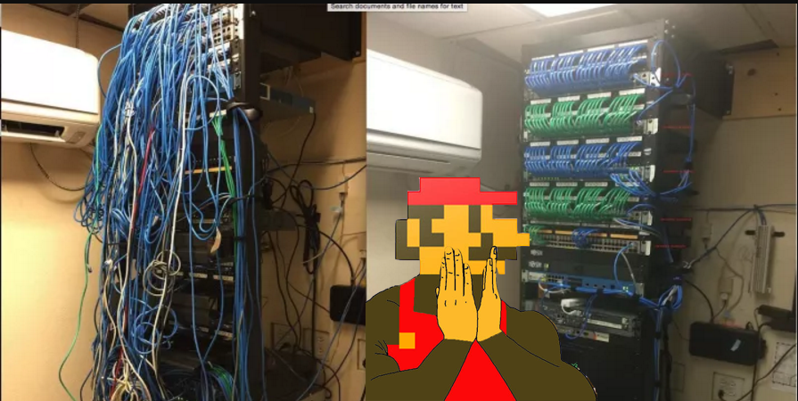
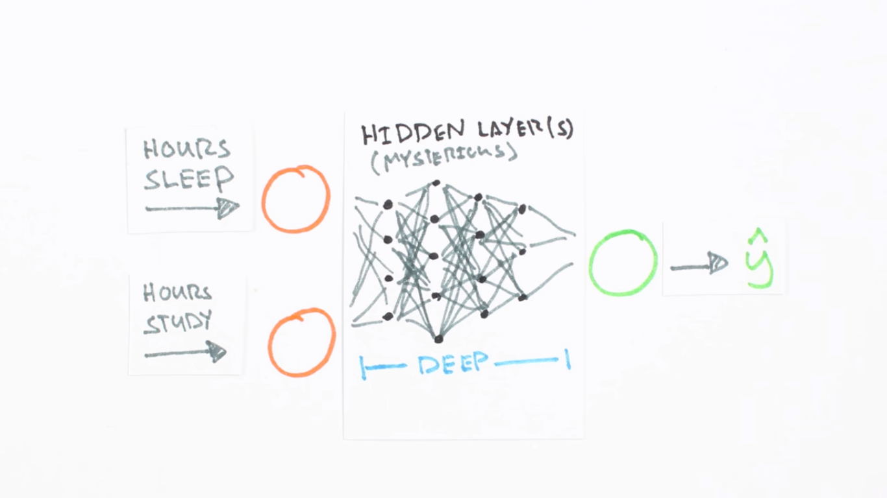
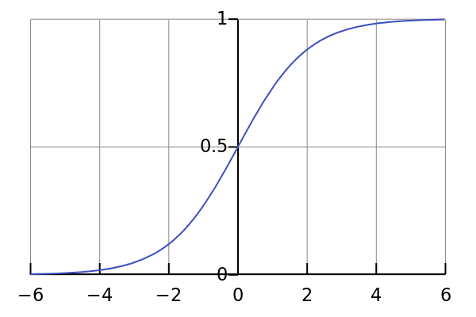
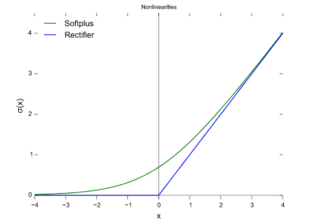
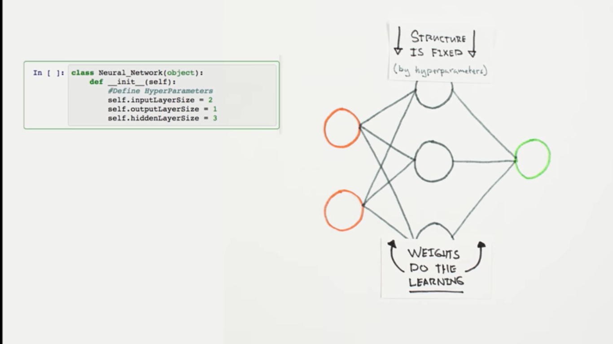
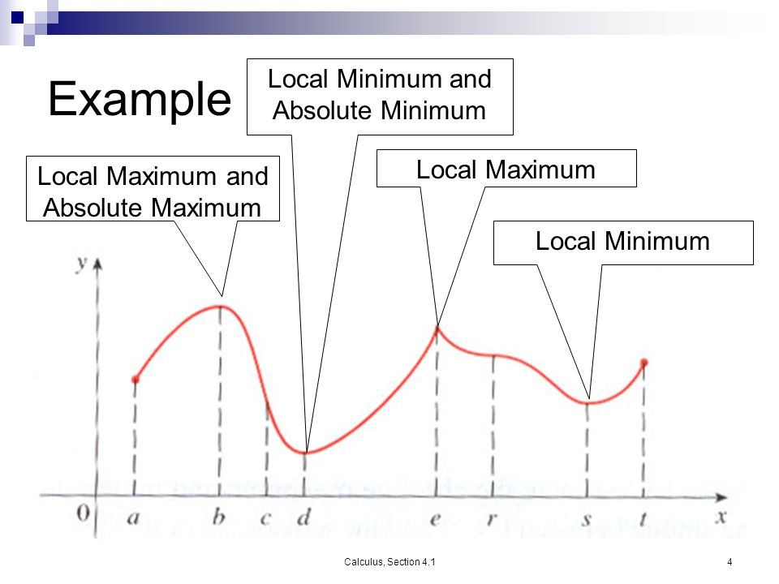

Machine Learning
Quand la machine apprend toute seule !
Définition
“A computer program is said to learn from experience E with respect to some class of tasks T and performance measure P, if its performance at tasks in T, as measured by P, improves with experience E. ”
- Tom Mitchell (1997)
E: Données T: Quelles Décisions du programme P: Comment évaluer le résultat
Exemple : email
T : Classer les email SPAM / PAS SPAM
E : Rajouter des données au système en aidant à le corriger en Cliquant sur Ceci est SPAM / PAS SPAM dans la boite
P : Les emails ont été bien classés
3 Types de machine learning
- Supervised Learning
- Unsupervised Learning
- Reinforcement Learning
Supervised Learning
Unsupervised Learning
Reinforcement Learning

Un peu de maths
Tout le travail pour f' et b dans
Prix, Endroit, Étage, Qualité, Ville, ???
Ceci est ce qui s'appelle Linear Regression
Algorithmes des SL(*)
(*)Le T de la définition
Deux grandes familles :
- Regression (tout ce qui concerne les chiffres)
- Classification (chat, chien, recommandation)
https://hackbrightacademy.com/blog/pycon-2014-melanie-warrick-machine-learning-talk/
Linear Regression
KNN
k Near Neighbours

http://www.kdnuggets.com/2016/01/implementing-your-own-knn-using-python.html
http://www.kdnuggets.com/2016/01/implementing-your-own-knn-using-python.html
http://www.kdnuggets.com/2016/01/implementing-your-own-knn-using-python.html
http://www.kdnuggets.com/2016/01/implementing-your-own-knn-using-python.html
SVM
Support Vector Machine
http://www.kdnuggets.com/2016/07/support-vector-machines-simple-explanation.html
Marche pour la regression/classification
Kernel en deux types : Linéaire et Non-Linéaire
Maximiser le margin des Support Vector
Bascule vers 3D pour plus de précision
Les données ?(*)
(*)Le E de la définition
IL FAUT TOUJOURS ORGANISER SES DONNÉES
Quelques règles :
- Utiliser un expert-1 : Domaine d'études pour savoir quoi traiter; par exemple: Expert foncier, Linguist...
- Utiliser un expert-2 : Stats/Algébre pour savoir comment traiter.
- Normaliser les données: changer l'échelle de certaines valeur pour tout mettre entre 0 et 1.
- Remplir les vides: il ne faut jamais laisser des valeurs vides ou éronées.
Il faut toujours diviser ses données en deux parties
- Celles pour s'Entrainer, généralement 70%.
- Celles pour Tester, les 30% qui reste.
MNIST Data
“The MNIST database of handwritten digits, available from this page, has a training set of 60,000 examples, and a test set of 10,000 examples. It is a subset of a larger set available from NIST. The digits have been size-normalized and centered in a fixed-size image.”
http://yann.lecun.com/exdb/mnist/
il faut toujours savoir le bon algorithme/données
ANN
Artificial Neuron Network

Exemple :
Faire un programme qui donne un taux de réussite selon le temps de sommeil VS études
https://goo.gl/ETUKkB
Deep Learning
Fonctions d'activation
Heaviside

sigmoid
Utilisée en dehors des couches cachés
Rectified linear units (ReLU)
Utilisée dans les couches cachés
On utilise des itérations pour laisser le programme avoir le bon W

L'optimisation lors des itérations consiste à trouver la valeur minimale
Gradient Descent
Trouver le plus court chemin pour déscendre au plus bas coin d'une montagne
https://www.coursera.org/learn/machine-learning/lecture/8SpIM/gradient-descent
https://www.coursera.org/learn/machine-learning/lecture/8SpIM/gradient-descent
Exemples réels

Les outils
- Matlab
- R
- Lua
- Torch
-
JAVA
- WEKA
- DL4J
-
Python
- Theano
- Scikit-learn
- TensorFlow
- Open Source en 2015
https://github.com/tensorflow/tensorflow - Python, C++, Cuda
- Autres API : Haskell, Java, Go, Rust, R , Scala.
-
Linux, macOS, Windows, Android
- TensorFlow Lite à partir de Android O
- Utilise Cuda (GPU) pour accélérer le temps de calcul
- Utilise Tensor Processing Unit (TPU) si vous voulez utiliser la force du Cloud (Google Compute Engine)
- TensorBoard
https://youtu.be/oB-NnVpvQ78
http://machinelearningmastery.com/start-here/
https://github.com/ZuzooVn/machine-learning-for-software-engineers
http://developercoding.com/tensorflow/
http://learningtensorflow.com/getting_started/
https://github.com/nlintz/TensorFlow-Tutorials
https://github.com/aymericdamien/TensorFlow-Examples
https://stackoverflow.com
https://stats.stackexchange.com/
https://www.youtube.com
https://www.google.com